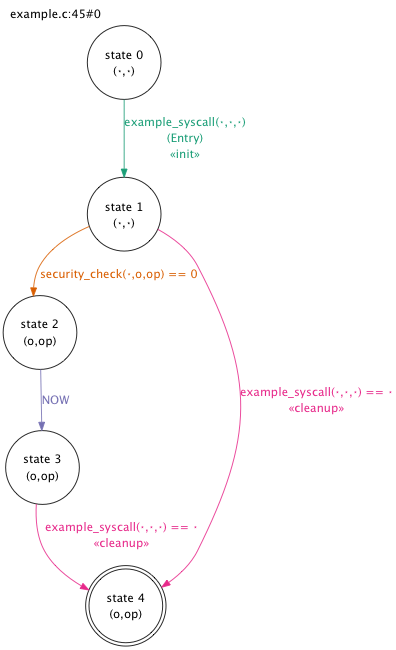
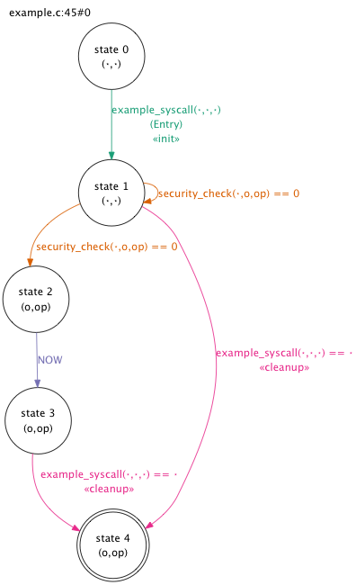

This page provides a high-level overview of the TESLA primitives made available to programmers wishing to add temporal assertions to their code. Programmers wishing to extend TESLA itself should consult the API documentation.
Most code examples on this page come from demos/smoketest/example.c in the TESLA repository.
TESLA provides programmers with two header file options: tesla.h, which defines TESLA primitives prefixed by __tesla, and tesla-macros.h, which provides examples of macros that are more programmer-friendly but could cause namespace collisions. We recommend that you start with the example tesla-macros.h and modify it as necessary to avoid namespace collisions with your code.
TESLA accepts two types of input: inline assertions and explicit automata. Both inputs describe the expected temporal behaviour of software; TESLA checks actual run-time behaviour against such descriptions.
Inline assertions are typically declared with the
TESLA_GLOBAL or
TESLA_PERTHREAD macros, or else the
per-thread convenience wrapper
TESLA_WITHIN.
These macros wrap the
__tesla_inline_assertion function,
which expects several arguments:
TESLA_GLOBAL and
TESLA_PERTHREAD
expect explicit start and end bounds
TESLA_WITHIN expects a
function whose entry and exit are the start and end bounds
Programmers can also describe automata directly; this is useful for explicit state machines such the TCP state machine.
Automata are declared and defined like C functions. The expected signature is:
/* Declarations */
automaton(assertion_name, struct struct_type *);
automaton(some_other_automaton, struct struct_type *);
/* Definition */
automaton(assertion_name, struct struct_type *sp)
{
/*
* a sequence of TESLA expressions
* that reference the 'sp' pointer,
* for instance:
*/
some_other_automaton(sp);
done;
}
The single variable referenced by the automaton must be declared as a formal parameter. All sub-automata (e.g. some_other_automaton() in the above example) must operate on the same type.
Automata are bound to structure instance lifetimes with the TESLA_STRUCT_AUTOMATON macro:
TESLA_STRUCT_AUTOMATON(struct tcpcb *tp, my_tcpcb_assertion, GLOBAL,
called(tcp_init, tp),
returned(tcp_free, tp));
There are nine kinds of TESLA expressions: three abstract expressions, three concrete events and three control predicates.
TESLA expressions may be combined with boolean operators.
Currently, the only supported operator is OR ('||').
instead of a AND b, programmers can write
a and b as separate
assertions.
A sequence of events can be specified with the TSEQUENCE macro, whose parameters are themselves TESLA expressions. For instance:
TSEQUENCE(
foo(x) == 0,
bar(y) || baz(z)
)
Many simple assertions can be written with the
previously
and
eventually
keywords, which provide wrappers around
TSEQUENCE:
/** A more programmer-friendly way to write assertions about the past. */
#define previously(...) TSEQUENCE(__VA_ARGS__, TESLA_NOW)
/** A more programmer-friendly way to write assertions about the future. */
#define eventually(...) TSEQUENCE(TESLA_NOW, __VA_ARGS__)
Automata can "include" explicitly-declared automata by "calling" them:
automaton(active_close, struct tcpcb*);
automaton(established, struct tcpcb*);
automaton(my_tcpcb_assertion, struct tcpcb *tp)
{
tp->t_state = TCPS_SYN_RECEIVED,
established(tp) || active_close(tp)
}
Programmers can specify that they expect a function to be called with particular parameters and/or return a particular value. This specification can be written in a very C-like manner:
/* A very simple TESLA assertion. */
previously(security_check(ANY(ptr), o, op) == 0)
This specifies that, within the TESLA automaton's bounds,
the security_check() function was previously called with the parameters
o and op and that it
returned 0.
The first parameter
ANY(ptr)
is a "don't care": any call to security_check() with
o and op that returns 0
satisfies the expression.
To instrument a function call, rather than return, the programmer can use the
called() macro:
/* An even simpler assertion! */
TESLA_WITHIN(example_syscall, previously(called(security_check)));
TESLA_WITHIN(example_syscall, previously(called(hold, o)));
called() takes the
expected function as its first parameter and may optionally be passed
parameters that represent expected function parameters.
As above, ANY can be
used as a "don't care" value.
Function return may also be specified with the
returned() macro,
which acts like called()
and, unlike the C-style expression above, can be used with void functions:
TESLA_WITHIN(example_syscall, eventually(called(release, o)));
Functions can be instrumented in the caller or callee context; see below for more information.
Assertions and automata can also specify that constant values should be
assigned to a structure field.
Assignments can be simple (e.g. s.foo = 1)
or compound (e.g. s.foo += 1 or s.foo++), but
a single automaton should not describe both simple and compound assignments
to the same structure field.
Mixing assignment types can confuse this instrumentation: if the old value is 0 and the new value is 1, is this an assignment of constant value 1 or an increment operation? Such mixing will trigger a compiler warning:
Currently, fields whose accesses are to be instrumented must be manually annotated with an attribute of the following form:
__attribute__((annotate("field:struct_name.field_name")));
We will remove this limitation in the future by either modifying Clang to make it produce field annotation on demand or else by changing the way the field access instrumentation detects accesses.
The TESLA_NOW event refers to
the moment at which an assertion site is reached.
For instance, in the following code:
int foo(int x) { return 0; }
void bar()
{
int i = 42;
foo(i);
TESLA_WITHIN(bar,
TSEQUENCE(
foo(42) == 0,
TESLA_NOW,
foo(43) == 0
)
);
foo(++i);
}
TESLA instrumentation will produce five events when bar()
is called:
barfoo(42) returned 0TESLA_NOWfoo(43) returned 0bar
Any expression inside an optional()
predicate is permitted but not required to occur.
This is most useful in combination with
strict mode (described below).
By default, TESLA instruments function calls and returns in the callee
context, where instrumentation only has to be done once.
It is possible to explicitly choose between callee- and caller-context
instrumentation using the callee()
and caller() predicates, which may
be nested arbitrarily:
TESLA_WITHIN(foo,
caller(
TSEQUENCE(
bar(x) == 42,
callee(baz(y) == 0 || baz(z) == 0)
)
)
);
Sometimes, it is desirable to specify the exact behaviour of the system:
"the following events can only ever occur according to this automaton".
Other times, the programmer wants to specify that "on this code path,
the behaviour of the sytem is ...".
These modes can be selected from using the
strict()
and
conditional()
predicates.
In strict() mode (the default for
explicit automata representations), it is an error for any named event to
occur outside of the sequences described by the given automaton.
For instance, if an automaton includes the event
tcp_control_block->t_state = TCPS_CLOSING,
it is an error for TCPS_CLOSING to be assigned to
tcp_control_block->t_state outside of the automaton.
In conditional() mode (the default
for inline automata), any named event can occur at any time unless the code
path includes the TESLA_NOW event; then the system must
behave as described in the automaton.
For instance, many FreeBSD kernel assertions may reference the function
syscallenter(); it is only an error for this function event to
occur in a way not described by an assertion if we are on the code path
described by that assertion.
The difference between automata generated in strict and conditional mode is illustrated here:
| Strict mode | Conditional mode |
|---|---|
|  |  |